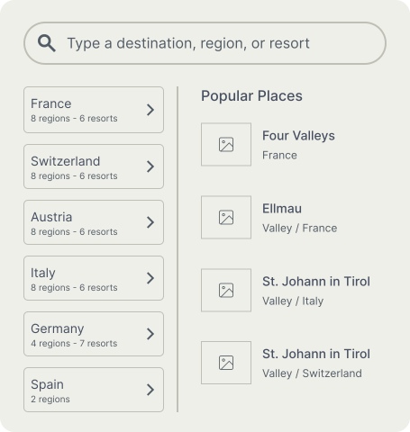
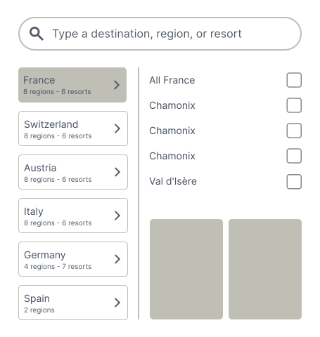
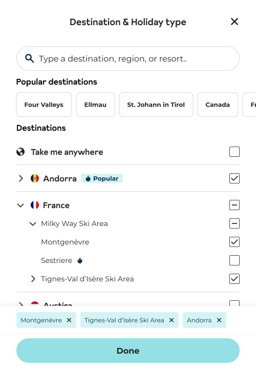
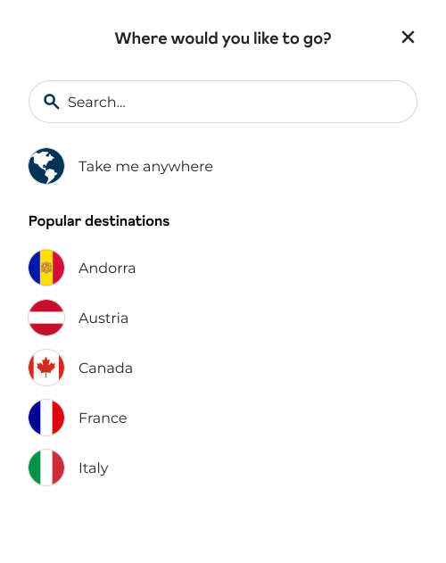
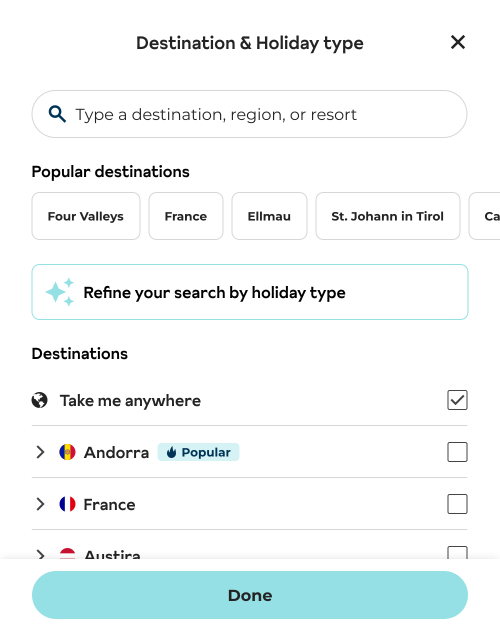

Option 01
Explored
Region level only
More flexibility within the modal, but still reliant on users knowing specific resort names. This may not be enough at the entry point.


From recall to discovery, giving users
the space to browse and decide.
Inghams is a UK-based holiday operator, best known for ski trips, offering destinations across multiple countries, regions, and resorts. I led the redesign of how users select a destination — shifting from search-led behaviour to a more exploratory, decision-driven experience.


Users typically begin their journey through a search widget on the homepage and key landing pages. Clicking the destination field opens a modal used to select where to go.
Travel products often rely on search, but discovery requires visibility — users can’t choose from options they can’t see.
Users often defaulted to searching for familiar destinations, even when better-fitting resorts existed deeper in the hierarchy.
The challenge was to introduce a more flexible way of selecting destinations, without increasing complexity at a high-traffic entry point. The solution needed to
I proposed splitting the work into two phases — validating a structured model first, before expanding into a broader discovery experience.
Discovery over recall — don't rely on users knowing exact destinations.
Show depth only when users ask for it.
Selection supports exploration — don't interrupt the flow.
A key decision in Phase 1 was how much of the destination hierarchy to expose. To explore this, I ran a workshop with the team, focusing on the trade-off between simplicity and depth.
The team aligned on a region + resort model, with the key challenge being how to introduce this depth without overwhelming the interface. The solution was progressive disclosure — revealing each level only when needed.
In the existing experience, selecting a destination closed the modal immediately. Adding another destination meant reopening the modal and repeating the process.
A persistent selection tray was added to the bottom of the modal. This allows selections to be reviewed and adjusted before continuing.
Users can now navigate through the destination hierarchy (country → region → resort) and select multiple options without starting over. Prototyped the interaction in Figma Make to validate the flow before development.
View live product


After launch, I reviewed 45 user sessions to understand how the new flow was actually being used — comparing structured browsing against free-text search and tracking how users moved through the hierarchy.
This shift reduced reliance on prior knowledge, but raised a question — are popular destination tags still doing enough?
of users chose the structured list to select their destination.
navigated beyond country level (region or resort).
of users combined both methods — validating flexibility.
selected from the structured list even when popular destinations were visible.
This shift reduces reliance on prior knowledge and helps more users engage with the full range of destinations.
This extends the model by introducing a second way to start — allowing users to begin with what they’re looking for, while still allowing direct destination selection within a single interaction.


We first explored introducing this within the widget, but it added too much complexity at the entry point. Keeping it inside the modal allowed the interaction to expand without affecting the initial step.
More visual layouts were explored, but they competed with the selection task. The interface stays focused on clarity, with inspiration supporting rather than leading.
I pushed back on including facilities alongside holiday type and “best for” tags which already covers these broadly, and detailed inputs are more useful later.
Those who know exactly where to go.
Those exploring, unsure which country fits.
Those starting with a holiday type in mind.
Leading this project from brief to launch, my focus was on the decision-making experience — not just what to show, but how users would move through it.
Reframed the brief from increasing discoverability to redesigning how users explore, select, and commit to a destination.
Ran the workshop exploration and presented direction to the team.
Designed the selection tray to replace an immediate one-tap action with a considered, reversible decision.
Prototyped the interaction in Figma Make to validate the flow before development.
Proposed and aligned the team around a phased approach to validate the core interaction before expanding.
Conducted post-launch research independently — reviewing 45 user sessions to understand how the new experience was actually used.
Pushed back on adding facilities in Phase 2 — protecting simplicity at a critical entry point.
Phase 1 made the destination structure accessible. Phase 2 extends this with behaviour-based entry, supporting the three user types together.
Popular destinations appeared to be working — users were selecting from them. But once a structured list was available, most users moved to that instead. It was a good reminder that a feature can look successful simply because there's nothing better alongside it.